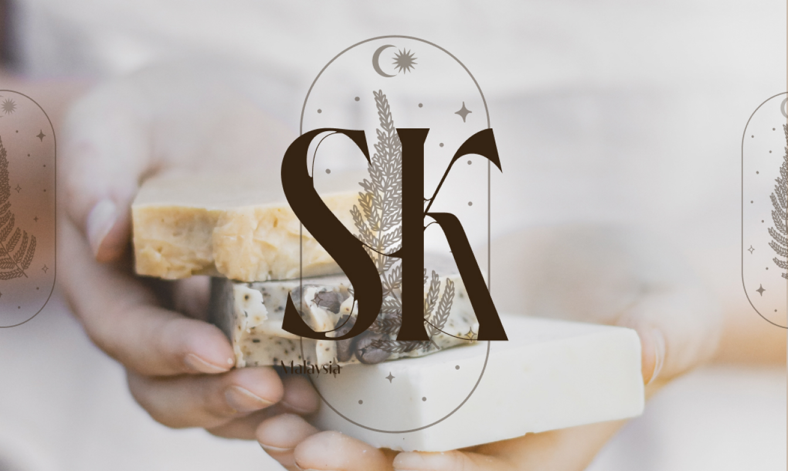

SILKY KISS //2022
SILKY KISS est une nouvelle marque de savon pour les mains. Venant tout droit de Malaisie, cette petite compagnie se lance dans le savon organique et végétale. Produit localement leur moto est de laissé un sentiment de légéreté sur la peau aprés utilisation.
